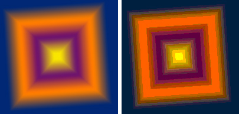
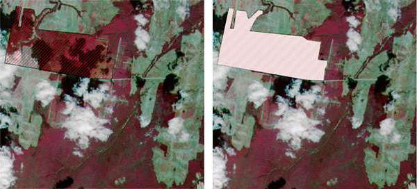

Экспорт вида или макета карты в растр высокого разрешения
Описание процедуры экспорта с сохранением качества
Очень часто встает задача сделать из карты представленной в Arcview в виде (View) или макета карты (Layout) растровый файл нужного (обычно большого 300-600 dpi) разрешения, например для дальнейшей печати. Существует несколько вариантов решения этой задачи.
*все перечисленные далее особенности экспорта касаются только Arcview 3.x
 Экспорт
в один из растровых форматов JPG, BMP.
Экспорт
в один из растровых форматов JPG, BMP.
Вариант подходит для быстрого вывода картинки для просмотра или Web, но не подходит для серьезной печати. JPG во-первых не всегда позволяет экспортировать с большим разрешением если количество пикселов в результирующем изображении превышает 20 млн пикселов, иногда ошибка segmentation violation выдается на разрешениях больше 300-600 dpi независимо от кол-ва пикселов (http://forums.esri.com/thread.asp?c=3&f=38&t=85906&mc=14), во-вторых JPG - это формат со сжатием, что также не всегда приемлемо. BMP экспортируется как файл в индексированных цветах, при этом основательно их, как правило, исказив, что тоже, как правило, не допустимо.

Искажение цветовой информации при экспорте в BMP (Windows Bitmap), слева исходное изображение, справа экспортированное в формат BMP в Arcview 3.2a
И тот и другой форматы плохо поддерживают экспорт изображений на которых присутствуют прозрачные заливки (применение векторных заливок из палитр hatch.avp или carto.avp частично решает проблему)

Искажение прозрачных заливок при экспорте в простой графический формат (JPG, BMP), слева исходное изображение (так как оно выглядит в Arcview GIS), справа экспортированное.
 Экспорт
в векторный формат EPS (Level 1 PostScript, драйвер Arcview Basic) или
PostScript New (Level 2 PostScript, Arcview Enhanced).
Экспорт
в векторный формат EPS (Level 1 PostScript, драйвер Arcview Basic) или
PostScript New (Level 2 PostScript, Arcview Enhanced).
Экспорт в PostScript Level 2 возможен с любым разрешением, экспорт в формат EPS осуществляется с разрешением 300 dpi. Недостатком экспорта в формат EPS (Level 1) является также невозможность экспорта тем Image Analysis.
После экспорта в один из этих форматов необходимо полученный файл растеризовать, то есть перевести векторный EPS в один из простых растровых форматов, более подходящих для печати (например TIFF). Растеризацию можно проводить несколькими способами (отличающимися главным образом скоростью):
2а. Растеризация в Adobe Photoshop. Photoshop растеризует EPS, PS файлы полученные путем экспорта из Arcview 3.x (до версии 6.0 необходимо выбрать в типах файла Generic EPS, иначе импорт таких файлов был невозможен). Способ надежный, но довольно долгий (особенно при включенном режиме Anti-Aliasing).
2б. Растеризация с помощью ArcPress. ArcPress может быть установлен в виде специального модуля к Arcview или в комплекте с ArcInfo 8.x Workstation под именем "Print". Растеризация гораздо более быстрая (иногда в десятки раз), недостаток заключается в необходимости наличия дополнительного модуля или ArcInfo
2c. Растеризация с помощью GhostScript. GhostScript - альтернативный Adobe интерпретатор языка PostScript. Очень быстрый и совершенно бесплатный, растеризует PS, EPS, PDF файлы. Для растеризации в режиме эмуляции MS-DOS например из PS в TIFF необходимо ввести такую команду:
gswin32c -dSAFER -dBATCH -dNOPAUSE -sDEVICE=tiff24nc -r300 -dcolorscreen -dUseCIEColor -dTextAlphaBits=4 -dGraphicsAlphaBits=4 -sOutputFile=outfile.tif infile.psгде
gswin32c - название интерпретатора (включая путь, например c:\Tools\ghost\gs8.00\bin\)
r300 - разрешение с которым был напечатан файл
infile.ps - название исходного файла PS (включая путь)
outfile.tif - название конечного файла TIF (включая путь)
Печать в файл PS с последующей растеризацией.
Основные преимущество данного вида экспорта - экспорт растров любых размеров (до A0) если экспорт макета карты (layout) по каким-либо причинам невозможен (но установлен соответствующий драйвер принтера или Adobe Distiller), а также более корректная интерпретация сложных заливок (за счет поддержки PostScript 3 Adobe Distiller'ом). Результатом печати является файл PS, который также нуждается в растеризации (см. выше). Отличие файла PS от EPS заключается в наличие у последнего специального изображения уменьшенного разрешения (preview) позволяющего предварительно просматривать содержание файла не открывая его. Главное отличие этого метода от предыдущего - возможность вывода PostScript Level 3 файлов.
Для печати в PostScript Level 3 должен быть установлен либо драйвер принтера поддерживающего PostScript (сам принтер при этом может отсутствовать), Adobe Distiller или драйвер для печати от Adobe (http://www.adobe.com/products/printerdrivers/main.html).
*PostScript Level 2 файлы, как правило мало отличаются от Level 3, поэтому, возможно, вариант 2 с растеризацией в GhostScript является самым удобным и быстрым.
Дата создания: 01.03.2003
Автор(ы): Максим Дубинин